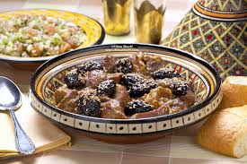

lamb and plums recipe
main menu

A classic Moroccantagine of lamb and plums isa sweet and savory, aromatic slow-cooked dish, typically featuring tender lamb, dried prunes, and a blend of warm spices like cinnamon, ginger, and turmeric, often garnished with toasted almonds and sesame seeds
ingrediants
- Lamb
- Onions, garlic, fresh ginger, olive oil, and sometimes ghee.
- Ground cinnamon, ground ginger, turmeric, black pepper, saffron threads, and sometimes cumin, coriander, or paprika
- Water or broth
- Plums
- Toasted blanched almonds, sesame seeds, and fresh cilantro or parsley.
instuctions
part 1 : Cooking the Lamb
- Sauté Aromatics: In your tagine or pot, heat the oil over medium heat. Add the chopped onion and sauté until soft and translucent, about 5-10 minutes. Add the minced garlic and fresh ginger and cook for another minute until fragrant.
- Brown the Meat: Add the lamb pieces to the pot. Brown the meat on all sides, stirring well to coat it with the onions and aromatics.
- Spices and Liquid : Sprinkle in the ground cinnamon, ground ginger, turmeric, black pepper, and salt. Stir everything to coat the meat evenly. Add the saffron threads and pour in enough water or broth to just cover the meat.
- Simmer: Bring the mixture to a boil. Reduce the heat to low, cover the pot with a lid, and let it simmer gently until the meat is almost tender, about 1 to 1.5 hours. Check occasionally to ensure the liquid level is sufficient and the meat is not sticking.
part 2 : Preparing the Prunes & Finishing
- Cook the Prunes: About 15-20 minutes before the lamb is done, prepare the prunes in a separate small saucepan. Combine the prunes with a little water (or some of the tagine sauce), the honey (or sugar), and an extra pinch of cinnamon. Simmer over low heat until the prunes are plump, soft, and the liquid has reduced to a dark, thick syrup.
- Combine & Finish: Once the lamb is tender, stir the glazed prunes (and their syrup) into the main pot with the lamb. Continue to simmer, uncovered, for about 10 more minutes, allowing all the flavors to meld and the sauce to thicken into a rich glaze. Taste and adjust seasoning with more salt or honey if needed.
- Garnish and Serve: Discard the cinnamon stick. Transfer the tagine to a serving platter or individual plates. Sprinkle generously with the toasted almonds and toasted sesame seeds.